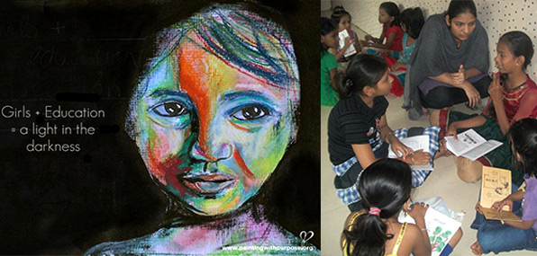

About Us
Education is one of the most critical areas of empowerment for women. It is also an area that offers some of the clearest examples of discrimination women suffer. Among children not attending school there are twice as many girls as boys, and among illiterate adults there are twice as many women as men.Offering girls basic education is one sure way of giving them much greater power -- of enabling them to make genuine choices over the kinds of lives they wish to lead. This is not a luxury. The Convention on the Rights of the Child and the Convention on the Elimination of All Forms of Discrimination against Women establish it as a basic human right. That women might have the chance of a healthier and happier life should be reason enough for promoting girls' education. However, there are also important benefits for society as a whole. An educated woman has the skills, information and self-confidence that she needs to be a better parent, worker and citizen.
An educated woman is, for example, likely to marry at a later age and have fewer children. Cross-country studies show that an extra year of schooling for girls reduces fertility rates by 5 to 10 per cent. And the children of an educated mother are more likely to survive. In India, for example, the infant mortality rate of babies whose mothers have received primary education is half that of children whose mothers are illiterate.
An educated woman will also be more productive at work -- and better paid. Indeed, the dividend for educational investment is often higher for women than men. Studies from a number of countries suggest that an extra year of schooling will increase a woman's future earnings by about 15 per cent, compared with 11 per cent for a man.
Over recent decades there has certainly been significant progress in girls' education . Between 1970 and 1992, combined primary and secondary enrollment for girls in developing countries rose from 38 per cent to 68 per cent -- with particularly high rates in East Asia (83 per cent) and Latin America (87 per cent). But there is still some way to go. In the least developed countries enrollment rates are only 47 per cent at the primary level and 12 per cent at the secondary level.
We provide a platform for the people to write there experiences and show world how they fought to for there children.